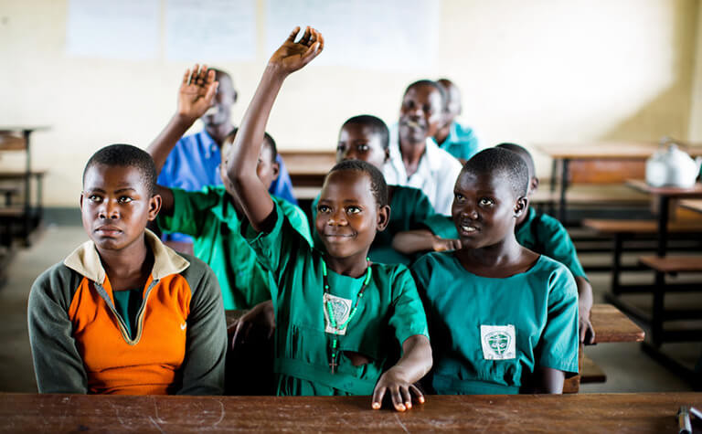

Menstruation is the monthly flow of blood from the uterus through the vagina. It means a girl is growing up and her body is preparing for the future when she might get pregnant and have babies. It is commonly referred to as Period, a natural bodily function, necessary for the reproductive health of women and adolescent girls. Menstruation occurs monthly for three to seven days, varying from female to female. The average amount of blood lost during a menstrual period is 30 to 72 millilitres (5 to 12 teaspoons).
All girls go through a pre-menarche stage. This is the time before menstruation begins. Typically girls start to menstruate during puberty or adolescence, usually between the ages of 10 and 19. A delay in the onset of menstruation is normal. Most girls will have regular menstruation from age 16 to 18. A woman can expect to see her menstrual period continuously until she reaches her menopause. This usually begins when she approaches her late 40s and 50s.
The time from the first day of a girl’s menstruation (when bleeding starts) to the first day of her next menstruation is usually 28 days (one month), but this can range from 21-35 days. this interval is known as menstrual cycle. It is important to keep track of your cycle to prepare for your menstruation and avoid uncomfortable situations

It is normal and natural to experience mood changes during your menstrual cycle; the changing levels of hormones during a girl’s cycle can affect her moods. This is known as PMS short for Pre- Menstrual Syndrome. Not all girls get this, but some do a few days before they start their menstruation, You can manage your mood changes by educating those close to you on your situation so they know how to relate to you during this time. Laughing, exercising, deep breathing and stretching are all ways to relax so that your moods are better managed
Females of reproductive age experience cycles of hormonal activity that repeat at about one-month intervals. With every cycle, a woman's body prepares for a potential pregnancy, whether or not that is the woman's intention. The term menstruation refers to the periodic shedding of the uterine lining. (Menstru means "monthly.'') The average menstrual cycle takes about 28 days and occurs in phases: the follicular phase, the ovulatory phase (ovulation), and the luteal phase. There are four major hormones (chemicals that stimulate or regulate the activity of cells or organs) involved in the menstrual cycle: follicle-stimulating hormone, luteinizing hormone, estrogen, and progesterone
Your menstrual cycle is the interval between your first and your next menstrual period. On average, the length of the menstrual cycle is 28 days, but generally this varies from woman to woman. Regular cycles that are longer or shorter than this, from 21-35 days, are normal.

Menstrual hygiene management is when you understand good menstrual hygiene behaviours and practise them. You know you are practicing good menstrual hygiene management when you have: • An understanding of basic facts linked to the menstrual cycle and how to manage it without discomfort and fear. • Access to clean absorbent material to collect menstrual blood. • Access to privacy to change used materials as often as necessary. • Access to soap and water for washing the body as required. • Access to safe and convenient facilities to dispose of used menstrual materials.
Your choice of menstrual materials are based on your preferences and what makes you comfortable, however what matters is to use the materials appropriately to prevent uncomfortable situations or health problems. Below are some examples of disposable and re-useable materials, some of which are safe to use while others are not.
| materials | appropriate? |
|---|---|
| Old cotton fabric (re-usable) |  |
| sanitary pads (disposable) | |
| Toilet roll | |
| Paper |
When using re-useable material (cotton cloth), it is also important to know how to keep and clean them for future use. Follow this 3 step method
1. Fold cloth, place in plastic bag, before placing in your bag or pocket.
2.
Wash with hot water and soap.
3. Make sure you dry in the sun and iron if you can.
It is important to know some indicators to look out for in order to detect, seek medical attention and treat infections while they are still in their early stages. Vaginal discharge is normal. The different discharges may be a result of your menstrual
cycle or different changes your body and hormones are going through. Normal vaginal discharge can be thin and clear, long and stringy or thick and mucous like. It is also normal when discharge appears cloudy or yellowish when dry on clothing.
However you should seek medical attention, when you notice the following from your vagina. POOR MENSTRUAL HYGIENE MANAGEMENT POTENTIAL RISKS
• Discharge accompanied by itching, rash or soreness
• Persistent increased discharge
• White, lumpy discharge (like curds)
• Grey/white or yellow/green discharge with a bad smell
• Wrap and dispose of your sanitary materials in latrine bins in your school, community or at home
• Do not dispose of your sanitary materials in toilet bowls or toilet pits.
• Do not dispose of your sanitary pad on the toilet floor.
• Do not throw your used sanitary pad on a pile of refuse.

It is important to keep yourself clean during your menstruation in order to prevent uncomfortable situations such as soiling your clothes or smelling bad. Here are a few personal hygiene tips which can help you through menstruation.
Use a
sanitary napkin, tampon, or menstrual cup. All these methods are good, and you don’t need to switch. Stick with whatever you prefer. Change your sanitary napkin/tampon/menstrual cup frequently, even when the bleeding isn’t much. Menstrual
blood tends to get contaminated with the body’s native organisms, so change regularly. This also helps you to avoid skin rashes. Regularly wash ..
It is common for women and girls to experience a variation in the length of their menstrual cycle, the amount of blood loss and the degree of pain and discomfort at different stages during their menstrual cycle.
The absence of menstruation in certain situation is considered to be normal
Such situations are